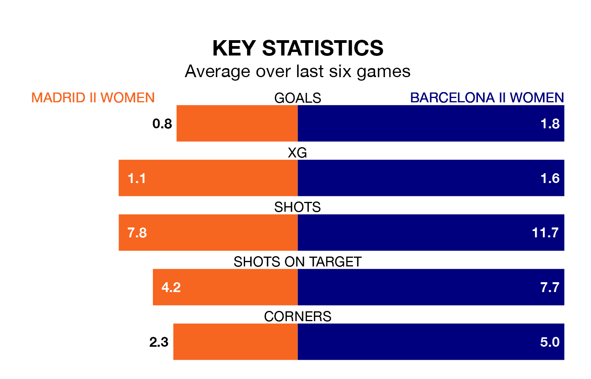

Relegation candidates Madrid II Women face a challenge against high-flying Barcelona II Women on Sunday.
Madrid II Women are rooted to the bottom of the Primera Federación Femenina table, and have picked up two wins and two draws in their 19 games to date.
Barcelona II, meanwhile, are second in the standings with 39 points, having won 12 and drawn three, and are five points behind table-toppers Deportivo de La Coruña Women.
Madrid II are in awful form in the Primera Federación Femenina, with no wins and six losses from their last six games.
With four wins and two draws over that period, Barcelona II's form is much better – they have taken 14 points from 18, compared to the home team's zero.
With 13 goals in 19 games so far this season, Madrid II are the league's lowest scorers with 0.7 goals per game. And they are conceding more than average, letting in 37 goals at a rate of 1.9 per game.
The visitors, meanwhile, are above average scorers, with 1.8 goals per game, compared to a league average of 1.2. They have conceded 0.8 goals per game.
Madrid II's last match was on February 18, a 4-1 loss against Europa Women.
Barcelona II drew 1-1 with AEM Lleida Women last time out, also on February 18.
Updated: 09:34 (UTC), 08/03/24